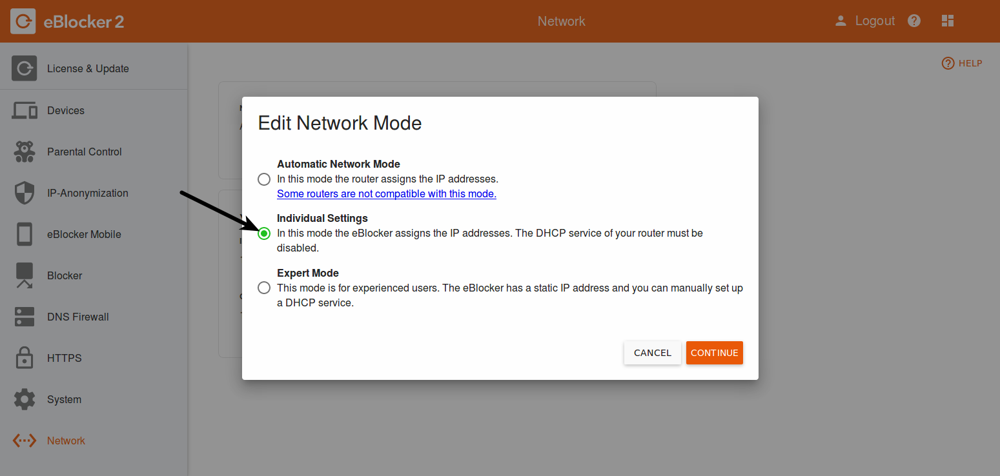
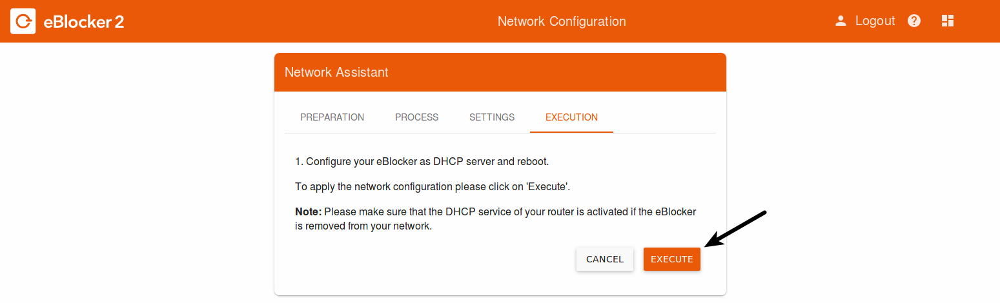

eBlocker Help > Knowledge Base > Use cases
You have connected the eBlocker and since then there are problems in your network?
This may be because you are using a router that is not compatible with the plug & play function of the eBlocker.
However, you do not have to do without the protection by the eBlocker and can put the eBlocker into operation in just four simple steps.
If you do not understand a term, you will find explanations for all technical terms in the glossary of our manual.
You can always find our current manual here.
Step 1 - Preparation: Log in to the router
Open a browser and log in to your router. You can usually find instructions on your router manufacturer's website.
z.B. FRITZ!Box: http://fritz.box – Instructions from can be found here.
z.B. Speedport: http://speedport.ip oder http://192.168.2.1 – Instructions from can be found here.
z.B. Technicolor TC7200: http://192.168.0.1 – Instructions from can be found here.
Go to your router settings and open the list of connected devices (DHCP clients).
z.B. FRITZ!Box: „Heimnetz“ > „Heimnetzübersicht“ > „Alle Geräte“
z.B. Speedport: „Grundeinstellungen“ > „Heimnetzwerk (LAN)“ > „Übersicht der Geräte im Heimnetzwerk“ > (MAC+IP) „anzeigen“
z.B. Technicolor TC7200: „Heimnetzwerk“ > „DHCP Client-Geräte“
There you will find an entry called "eBlocker". Make a note of this IP address.
Open another browser window and leave the existing one open.
Enter the IP address of the eBlocker in the address line of the new browser window and confirm with "Enter".
Step 2 - Moving the eBlocker
Go to the eBlocker settings in the "Network" menu, press the "Edit" button and the network wizard will start. Select "Individual settings" as the network mode.

Before you start, please read the sections "Preparation" and "Process" carefully. It is best to print out the "Settings" section or make a note of the information.

Now all you have to do is confirm the three boxes in the last section "Execution" and click on the button "Execute".

The eBlocker configures itself and then restarts. This can take several minutes.
After the restart, the eBlocker will notice that there is another DHCP server in your network and wait until you have disabled this one.
Step 3 - Disconnect the DHCP server from the router
Now please go back to the first browser window with your router settings. Go to the "DHCP server" settings of your router and deactivate the DHCP server there.
z.B. FRITZ!Box: „Heimnetz“ > „Heimnetzübersicht“ (Ansicht: Erweitert) > „Netzwerkeinstellungen“ > „IPv4 Adressen“ > Haken entfernen bei „DHCP-Server aktiveren“
z.B. Speedport: „Heimnetzwerk“ > „Heimnetzwerk (LAN)“ > „DHCP“ > „DHCP aus“
z.B. Technicolor TC7200: „Grundeinstellungen“ > „Lokales Netzwerk (LAN)“ > „DHCP-Server aktivieren“ > „DHCP deaktivieren“
Where to find them on your router is explained in your router manufacturer's manual. After you have deactivated the DHCP server of your router, save/apply the settings at the end. Your router may restart afterwards.
Step 4 - Restart all network devices
To have all network devices adopt the new settings, disconnect all computers, tablets, and other devices from your home network and then reconnect them. If individual devices have not accepted the settings, restart the relevant devices.
Important! If you want to undo these settings, you must first reactivate the DHCP server on your router and then deactivate the DHCP server of the eBlocker or set the network setting of the eBlocker to "Automatic".
Please also note our FAQ's.